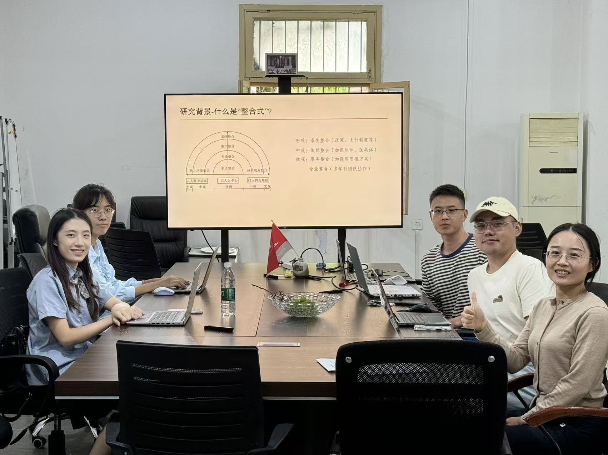

课题参与人员

潘杰 课题负责人，四川大学华西公共卫生学院/华西第四医院 教授/博导
赖泓宇 课题核心成员，四川大学华西公共卫生学院/华西第四医院 助理研究员
周楚帆 课题核心成员，四川大学华西公共卫生学院/华西第四医院 硕士研究生
蒋瀚鸿 课题核心成员，四川大学华西公共卫生学院/华西第四医院 硕士研究生
陈玺玥 课题核心成员，四川大学华西公共卫生学院/华西第四医院 硕士研究生
石娜 课题核心成员，四川大学华西公共卫生学院/华西第四医院 硕士研究生
李诗懿 课题核心成员，四川大学华西公共卫生学院/华西第四医院 本科生